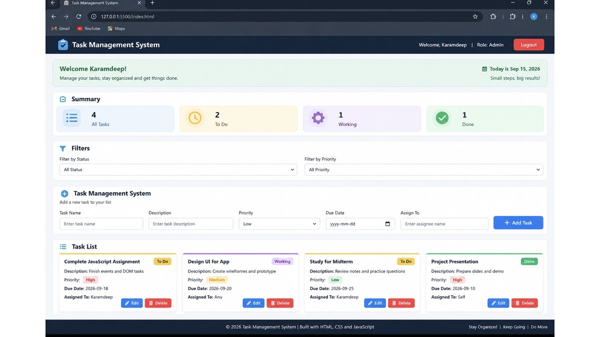

Projects
Here are some projects I have worked on during my Digital Design and Development studies.

Bamfield Tourism Website
I created a tourism website for Bamfield using HTML and CSS. The website provides information about local attractions, activities, and places to visit. This project helped me practice web page layouts, images, navigation, and CSS styling.

BrewMate Coffee Maker User Flow and Drink Order Application
I created a user flow for a coffee maker application called BrewMate and a drink order application using JavaScript. The flow shows the complete process from placing the cup and selecting a drink to brewing the drink and removing the cup. This project helped me understand user flow and interaction design. Users can also choose a drink, select a size, add items to the order, and see the total cost.

Mentoring App Design
I designed a mentoring application that helps connect mentors and mentees. I worked on the landing page, user interface, layout, components, and responsive design for desktop and mobile screens.

Task Management System
I created a task management system where users can add, edit, delete, and organize tasks. The system includes task filters, status information, and task summary counters. This project helped me improve my JavaScript and local storage skills.
Animation Project 1
This is a placeholder for my first animation project. I will update this section when I complete the animation project in Unit 3.
Animation Project 2
This is a placeholder for my second animation project. I will add my animation work here in Unit 3.